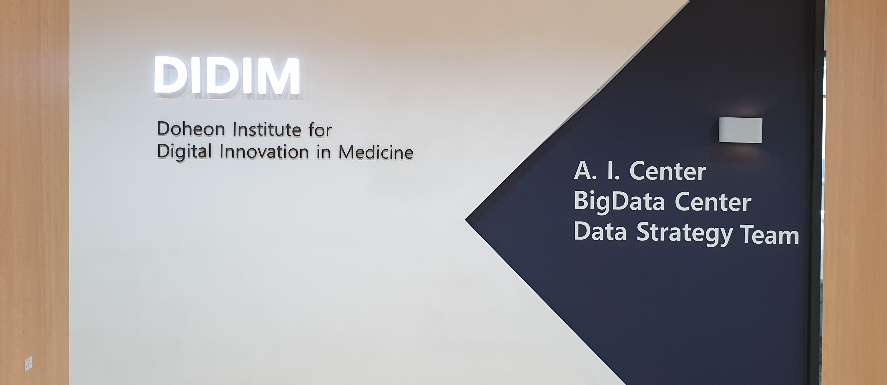

News
 1. 한림대의료원, "국내를 넘어 세계 병원으로 만들 것"2. "더 웅대한 2028년 향해" 한림대의료원, 4차 산업혁명시대 청사진 선포
3. 한림대의료원, 위 내시경 영상 자동 판독하는 AI모델 개발
4. 한림대의료원, 산,학 협력 MOU 체결
5. 한림대성심병원, "2021 의료데이터 중심병원" 선정
6. 한림대성심병원, "스마트병원 선도모델 지원사업" 선정
7. 한림대-링크제니시스, AI의료서비스 위한 합작사 "파인링크" 출범
8. 이민정·조범주 한림의대 교수, 대한안과학회 '우수구연 학술상'
9. 한림대의료원, ‘정확도 89.4%’ CT영상 판독 충수염 자동 진단 AI 모델 개발